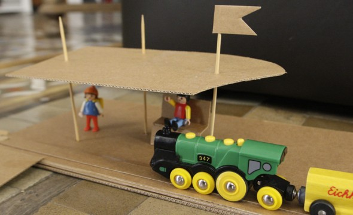

Inicio›Blog›Material›Un día de trenMaterial · Cartón · Actividad · JugarUn día de tren15 enero, 2013Jugamos todo el día con el tren; solo faltaban la estación y el túnel.← Lombriz de los númerosCuadro de tornillos →